L'inscription est très simple. Il suffit d'ouvrir l'application et d'appuyer sur le bouton s'inscrire. Sur cette vue, il vous est demandé d'entrer votre prénom, votre nom, votre adresse e-mail et un mot de passe. Appuyez sur le bouton valider. Ça y est, vous êtes inscrit.
Si vous avez un compte, vous pouvez vous connecter sur l'application. Ouvrez l'application, la page d'authentification s'ouvre. Entrez votre e-mail et votre mot de passe. Appuyez sur le bouton se connecter. Une nouvelle page s'ouvre, vous voilà connecté.
Si vous êtes connecté, vous pouvez modifier votre compte en appuyant sur le bouton de menu, et sur le bouton Settings et Modifier Compte. Vos informations s'affichent et vous pouvez les modifier. Validez en cliquant sur le bouton valider
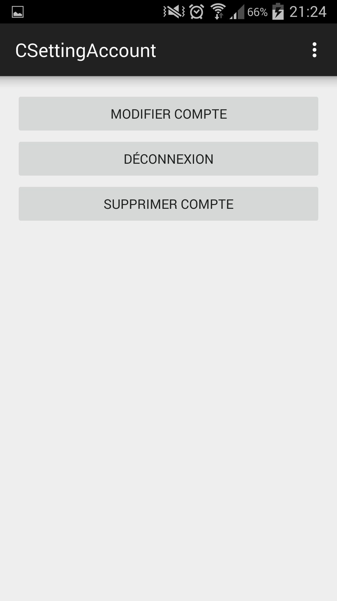
Si vous êtes connecté, vous pouvez supprimer votre compte en appuyant sur le bouton de menu, et sur le bouton Settings et Supprimer Compte. Votre e-mail et votre mot de passe seront demandés. Inscrivez-les, puis validez. Votre compte est supprimé.
Si vous êtes connecté, vous pouvez vous déconnecter en appuyant sur le bouton de menu, et sur le bouton Settings et Déconnexion
Une fois authentifié sur l'application, vous pouvez ajouter un contact à votre liste. Pour cela, veuillez appuyer sur le bouton contacts. Appuyez sur le bouton vert en bas à droite. Sur cette nouvelle vue, vous pouvez entrer l'adresse e-mail de la personne que vous voulez ajouter. Un appui sur le bouton check en haut de la vue ajoutera ce contact à votre liste.
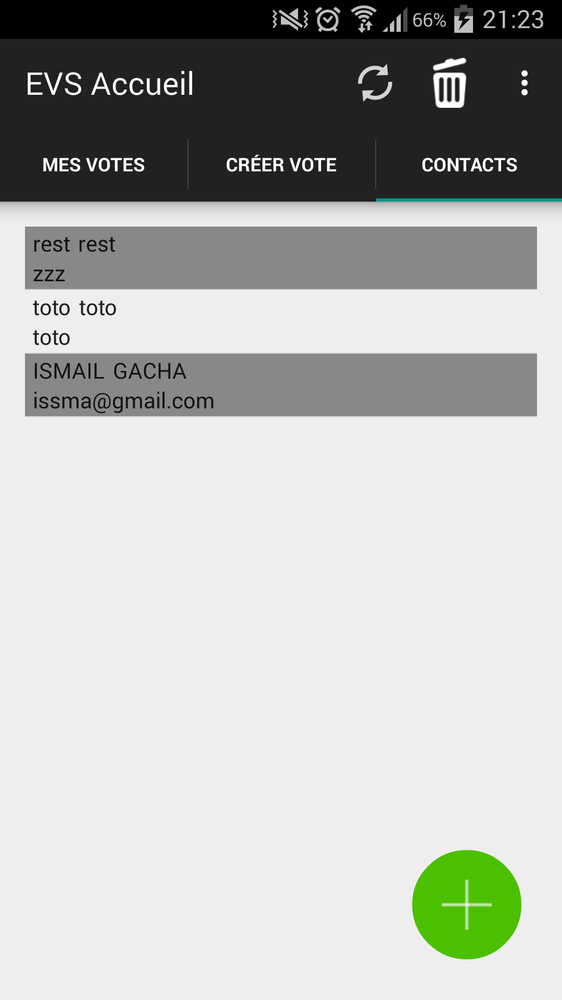
Une fois authentifié sur l'application, vous pouvez supprimer un contact à votre liste. Pour cela, veuillez appuyer sur le bouton contacts. Appuyez sur l'icône poubelle en haut de l'application. Un appui long sur le nom de la personne que vous voulez supprimer vous permettra de la supprimer de vos contacts.
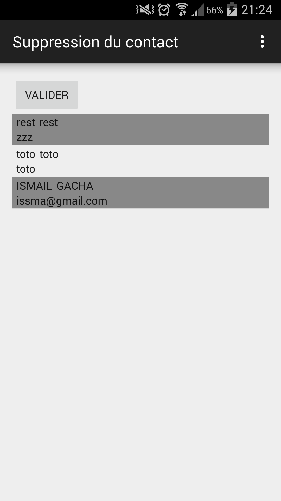
Une fois authentifié sur l'application, vous pouvez créer un vote. Pour cela, veuillez appuyer sur le bouton créer vote. Sur cette vue, il vous est demandé d'entrer un nom de vote, une date de début, une date de fin et de choisir votre type de vote (STV, Kemeny-Young, Jugement Majoritaire, Uninominal à 1 tour, méthode Borda). Cliquez sur valider. Vous êtes maintenant sur la vue des d'ajouts de candidats. Vous pouvez entrer le nom des candidats, ainsi que leur description. Il est possible d'ajouter et de supprimer un candidat grâce aux deux boutons prévus à cet effet, en haut de la page.
Pour le vote STV, il faudra aussi indiquer un nombre de gagnants.
Pour le vote Jugement Majoritaire vous devrez préciser le type de méthode de calcul choisi (Moyenne, Médiane ou Somme).
Appuyez sur valider pour continuer la création de vote. Maintenant, vous devez inviter des personnes à votre vote. Votre liste de contacts s'affiche. Sélectionnez les personnes que vous voulez inviter en cliquant sur la checkbox. Cliquez ensuite sur valider. Un récapitulatif s'affiche, vérifiez que tout corresponde à vos choix et valider. Le vote est créé, et les invitations sont envoyées.
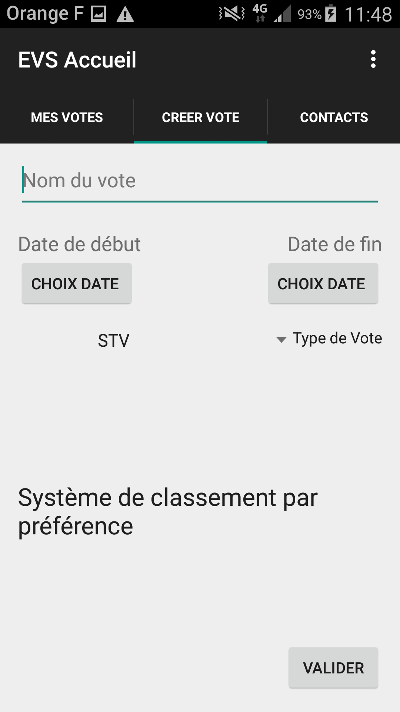 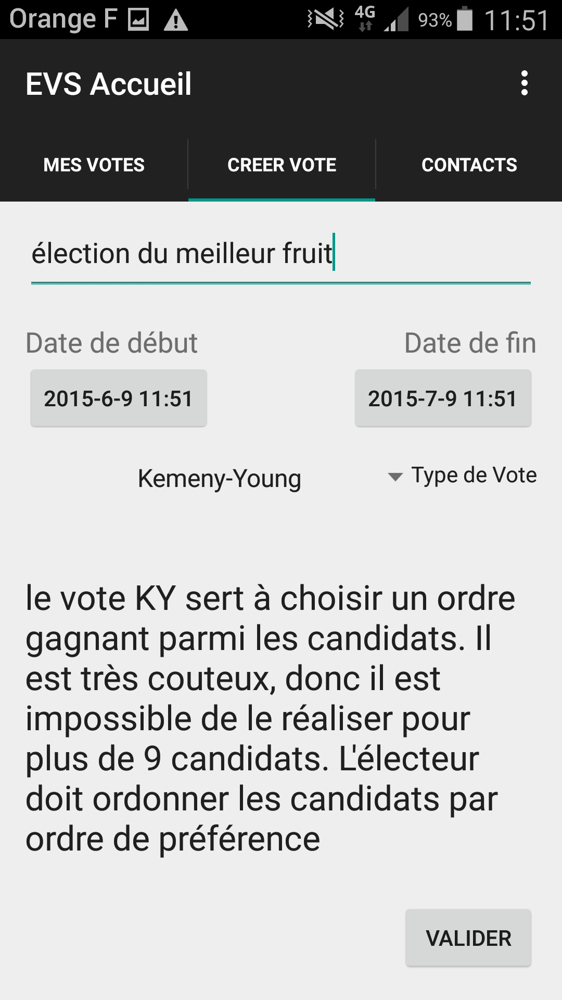 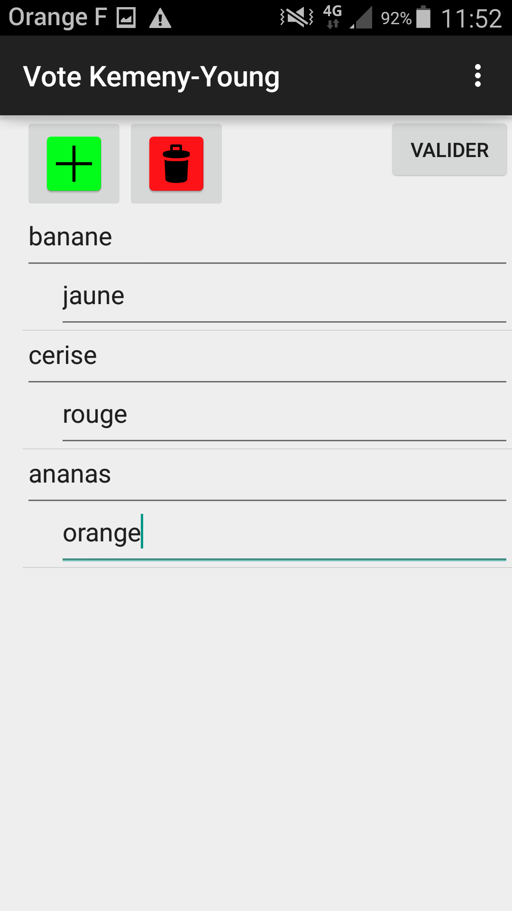 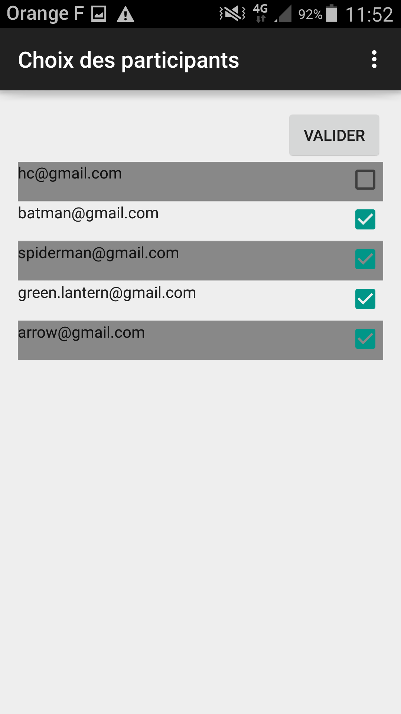
Une fois authentifié sur l'application, vous pouvez voter aux votes auxquels vous êtes invités. Pour cela, sur la page d'accueil, appuyez sur mes votes. Les votes s'affichent avec leur statut (fini ou en cours). Une icone verte est affichée si vous avez déjà voté, ou une icône rouge si vous n'avez pas encore participé au vote. Appuyez sur un vote auquel vous n'avez pas encore participé et qui est toujours en cours, et vous accédez à l'interface de vote.
Pour STV et Kemeny-Young : Une liste s'affiche. Vous devez classer vos choix par préférence. Appuyez longuement sur les candidats et placez-les où vous le souhaitez
Pour le Jugement Majoritaire : La liste des candidats s'affiche, avec une appréciation. Appuyez sur l'appréciation et choisissez celle qui vous convient.
Pour le vote uninominal à un tour et méthode Borda : Appuyez sur le candidat pour lequel vous voulez voter.
Puis, appuyez sur voter.
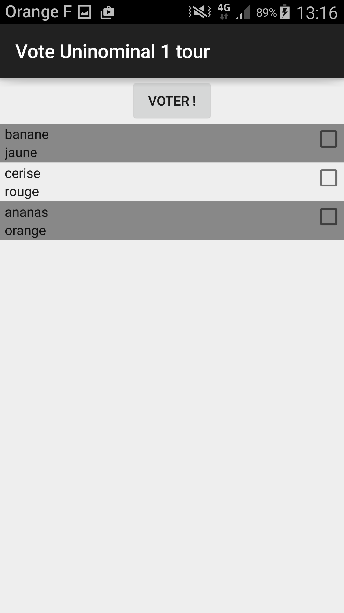 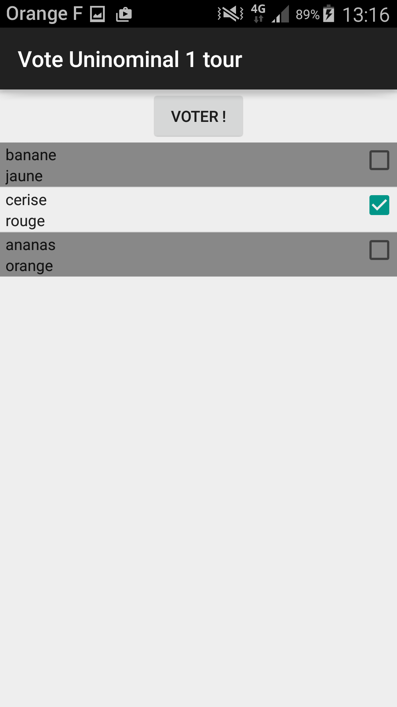 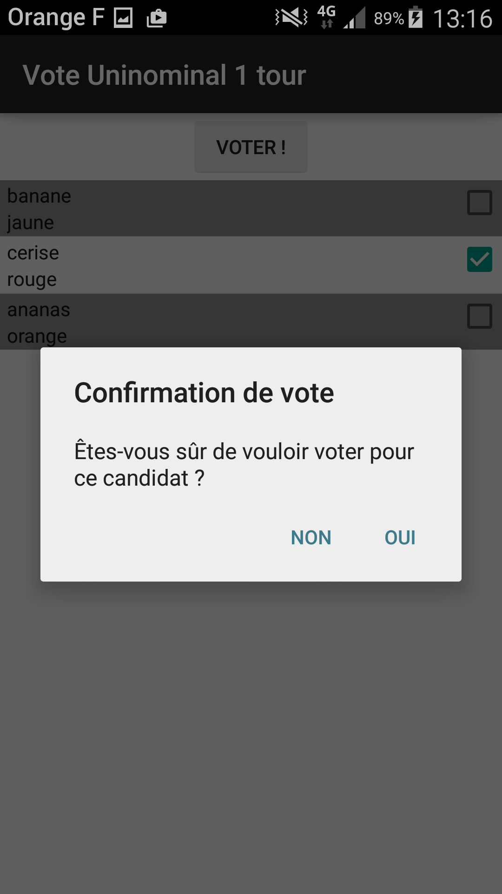 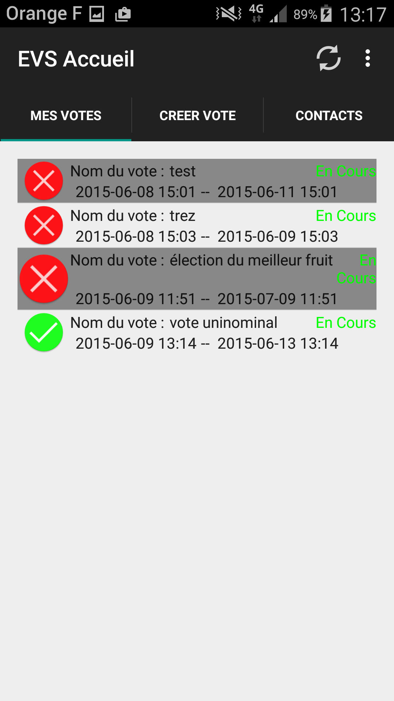
Une fois authentifié sur l'application, vous pouvez consulter les résultats des votes finis auxquels vous êtes invités. Appuyez sur le vote dont le statut est fini, et le résultat s'affiche.